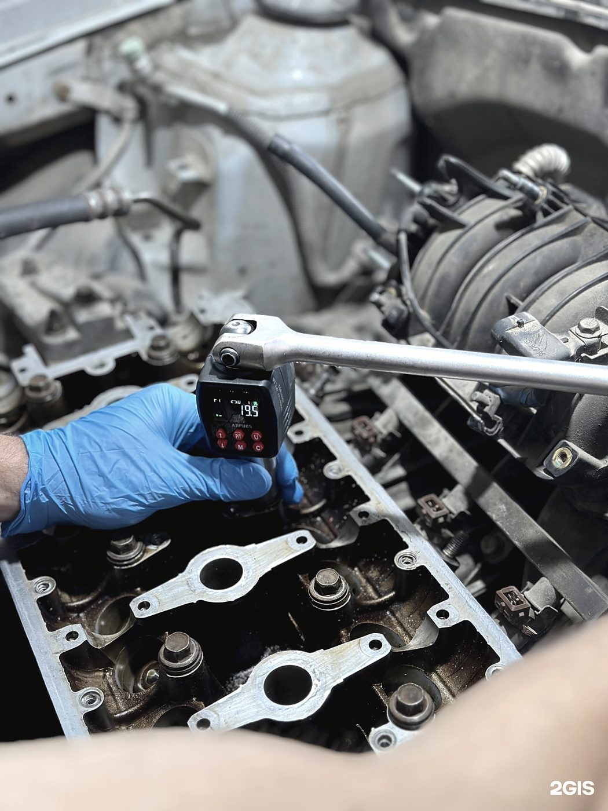
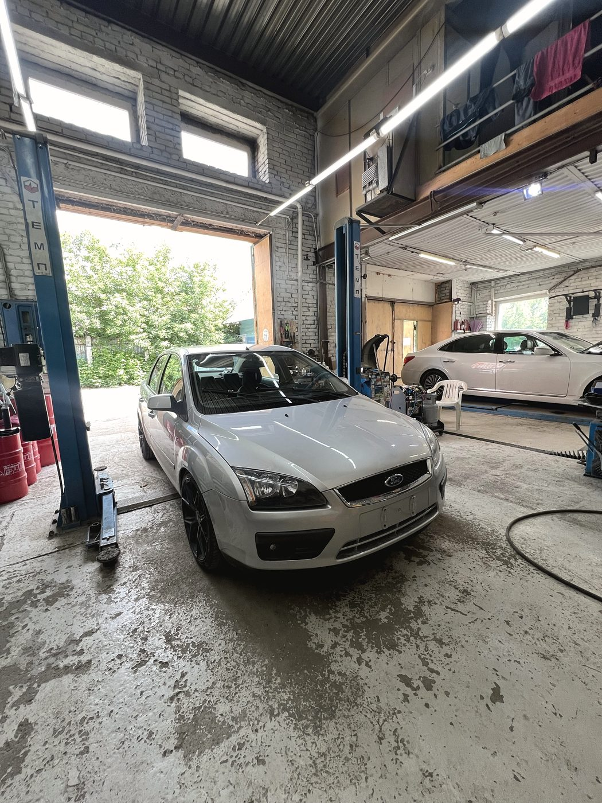
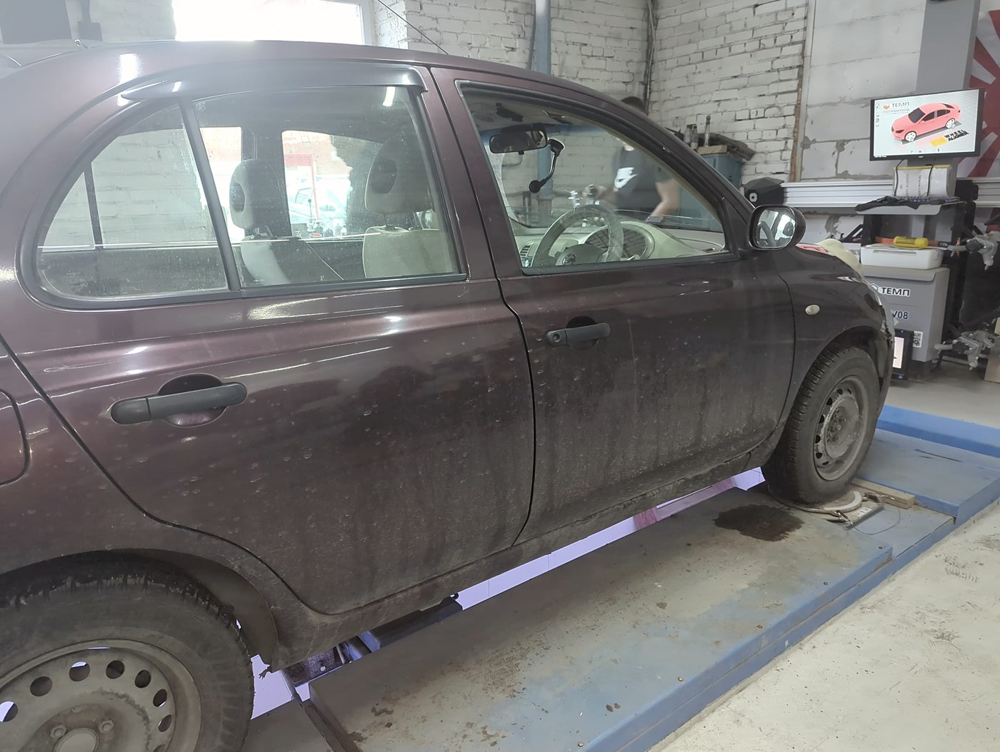
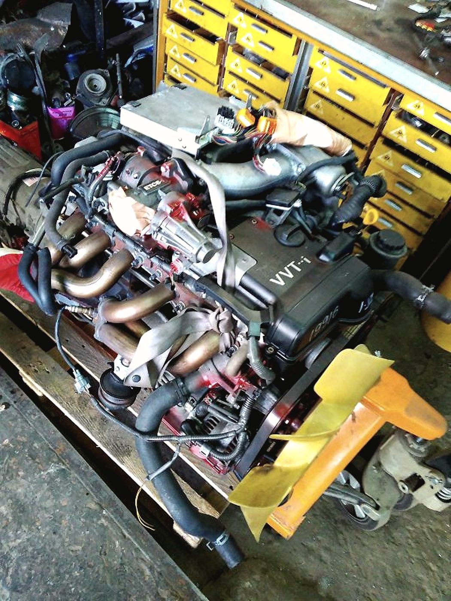
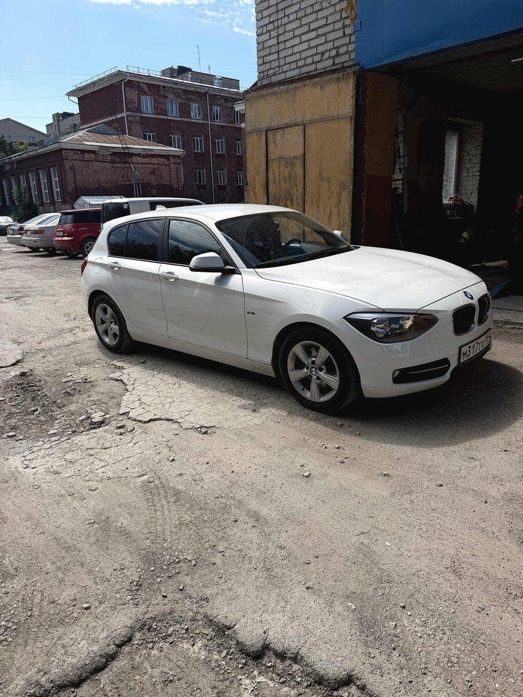
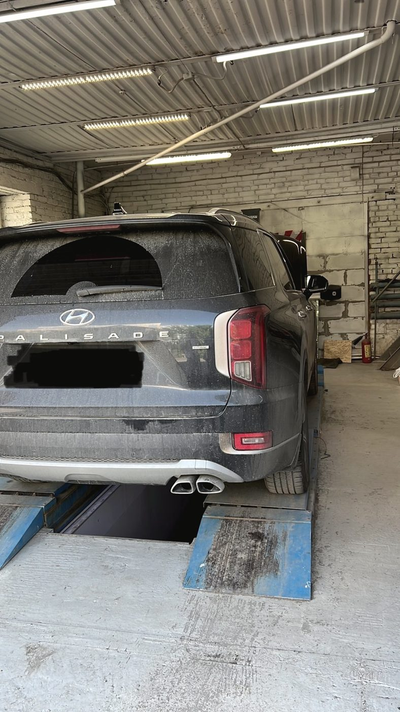

Смета до, а не счёт после
«Рассказал и расписал про все проблемы с машиной, сделал расчёт стоимости — сколько что будет стоить по работе и по запчастям. Не встречал ещё таких сервисов» — отзыв Расиля, июль 2026.
Автомастерская и запчасти · Красный проспект, 72 · Центральный район
Red Service — небольшая мастерская в центре Новосибирска. Двигатель, ходовая, развал-схождение, стартеры и генераторы, электрика, сигнализации. Магазин запчастей и масла — здесь же, на первом этаже.
История, которую написал клиент
«Единственный автоцентр, который не бросил в беде»
27 февраля, минус тридцать. Евгений ехал из Кемеровской области через Новосибирск. В обед пропала тяга, мотор затроил, появился посторонний шум. На ближайшем СТО приговорили ремень ГРМ — срезало зубцы, — но на замену не взяли. Остаться в чужом городе в пятницу на сутки со сломанной машиной — то ещё удовольствие. Мы взяли и поменяли за полтора часа. Он уехал домой в тот же день.
Евгений, Новокузнецк · отзыв в 2ГИС · 2 марта 2026

Как работаем
Адрес почты мы завели задолго до вывески, и менять не стали: он точнее описывает, как мы работаем. Старая школа — это не про старые машины, а про то, что причину ищут, а не меняют узлы подряд, и что цену называют до ремонта, а не после.
«Рассказал и расписал про все проблемы с машиной, сделал расчёт стоимости — сколько что будет стоить по работе и по запчастям. Не встречал ещё таких сервисов» — отзыв Расиля, июль 2026.
После диагностики вы получаете не список на всю сумму, а порядок: что менять в первую очередь, а с чем спокойно ездить до следующего сезона.
Развал-схождение в мае 2026 у нас стоил 2 000 ₽ — клиент до этого обзвонил несколько СТО, там называли от 2 до 3 тысяч. Актуальную цену уточняйте по телефону.
Это первое, что отмечают люди, зашедшие в первый раз. Мелочь, по которой обычно видно, как относятся и к машине.
Услуги
Диагностика, ГРМ, сальники, замена силового агрегата на контрактный — от подбора до установки.
Стойки, рычаги, ступицы, тормоза. Диагностика подвески перед дальней дорогой.
Регулировка на стенде, балансировка. Делаем после любых работ по подвеске.
Ремонт и замена. Проверяем деталь до установки — новая не значит исправная.
Компьютерная диагностика, поиск неисправностей, обслуживание кондиционера.
Установка и ремонт охранных систем, восстановление после неудачной чужой работы.
Ремонт и замена элементов выпуска, устранение прогаров и посторонних шумов.
Осматриваем машину, которую вы собираетесь купить, и говорим о ней всё, что видим.
Моторное и трансмиссионное, есть масла на розлив — можно взять ровно нужный объём.



Магазин при мастерской
У нас своя розница: подвеска, тормозная и топливная системы, рулевое, трансмиссия, расходники, двигатели. Поэтому ремонт чаще всего не встаёт на паузу «ждём запчасть с другого конца города».
Подвеска и ходовая, тормозная и топливная системы, рулевое управление, трансмиссия, расходные материалы, двигатели.
Моторные и трансмиссионные масла, в том числе на розлив. Автохимия для обслуживания и мелкого ремонта.
Подбор шин и дисков под конкретный автомобиль, с установкой и балансировкой в тот же визит.
Проверка старого, подбор и установка нового. Зимой — самая частая причина «машина не заводится».
Марки, по которым держим запчасти
Acura · Audi · BMW · Brilliance · BYD · Changan · Daewoo · Daihatsu · Datsun · Exeed · Ford · GAC · Geely · Great Wall · Haima · Haval · Honda · Hyundai · Infiniti · Isuzu · Kia · Lexus · Mazda · Mercedes-Benz · Mitsubishi · Nissan · OMODA · Opel · Renault · Skoda · Subaru · Suzuki · Toyota · Volvo


Честно про режим
Суббота и воскресенье — выходные, и мы не делаем вид, что «можно договориться». Зато в будни вы попадаете к мастеру, а не в конец очереди из тех, кто смог приехать только в выходной. Запишитесь заранее по телефону — так мы сразу отложим под вас время и пост.
Отзывы · 4,9 из 5 по 83 оценкам в 2ГИС
Очень переживала из-за замены двигателя — боялась, что затянется, будут какие-то сюрпризы с ценой или качеством. И всё прошло идеально! Работали быстро, но без спешки, видно, что знают своё дело. Когда забрала машину, сразу почувствовала разницу: двигатель шепчет.
Анастасия Р · 18 февраля 2026
Случайно из 2ГИС узнал адрес, заехал сделать развал-схождение. Приветливые люди, чистота в сервисе, при осмотре подсказали ещё и о сальнике. Ранее узнавал в нескольких СТО от 2 до 3 тысяч, здесь стоимость 2 тысячи. Рекомендую.
Дмитрий Егай · 12 мая 2026
Помогли подтвердить неисправность нового генератора, заменили всё быстро и качественно. Спасибо, что есть люди, которые реально работают и разбираются в своём деле.
Катрин · 19 июня 2026
Заезжал на диагностику авто, ценник более чем адекватный. Рассказали, что нужно поменять в первую очередь и с чем можно подождать. На работы и запчасти цены приемлемые.
Сергей Иванов · 19 июня 2026
Контакты